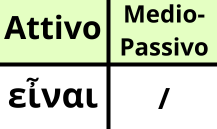

L'infinito di ειμί in Greco Antico ha la stessa dfunzione dell'infinito del verbo essere, ossia esprimere il suddetto verbo in un'azione generale.
Come per gli infiniti tematici, c'è da denotare una cosa. Sul dizionario il verbo ειμί non si trova nella forma rappresentata sulla tabella, ma come i verbi tematici, ovvero alla prima persona singolare attiva (anche perché non esiste il passivo di essere) presente indicativo.
Memorizza bene la forma, è solo una che troverai spesso nelle infinitive oggettive e soggettive, cosa che però vedremo più avanti.